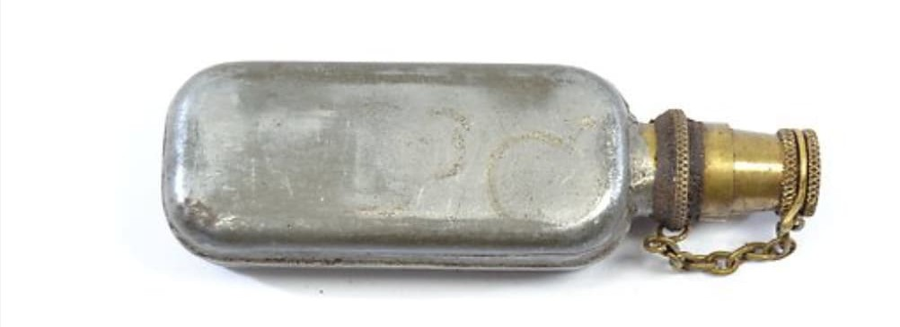
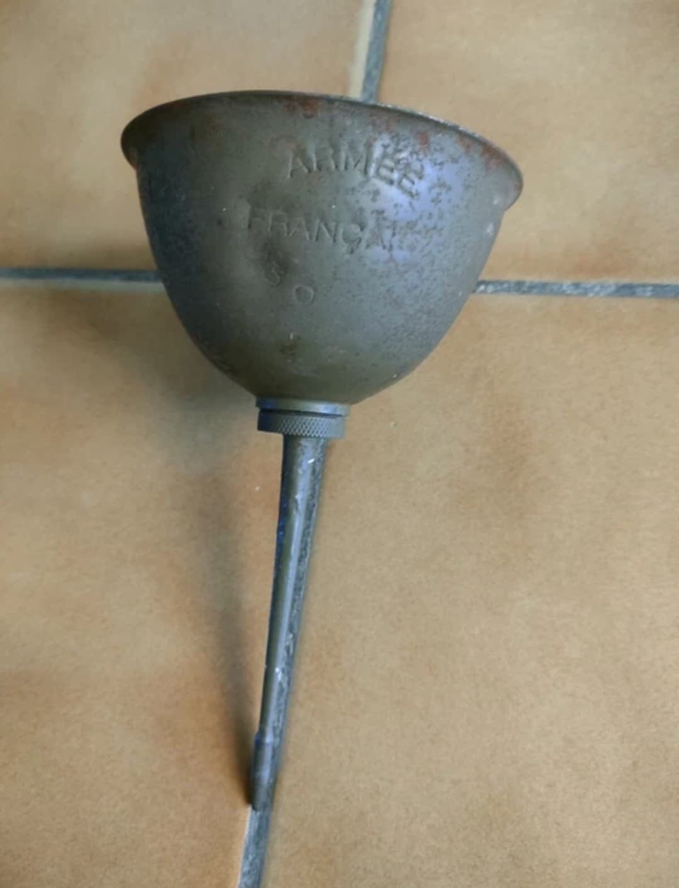
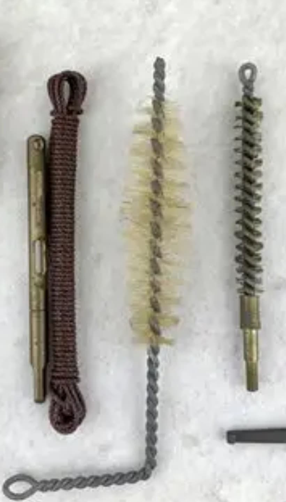
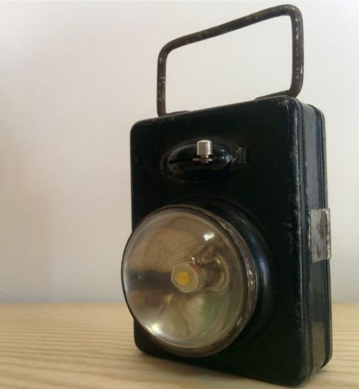
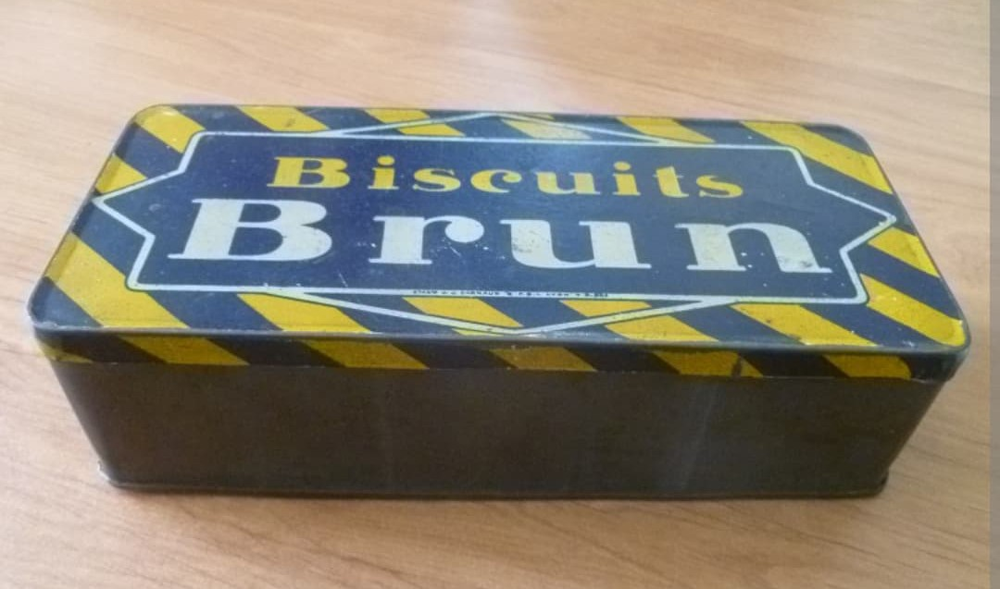
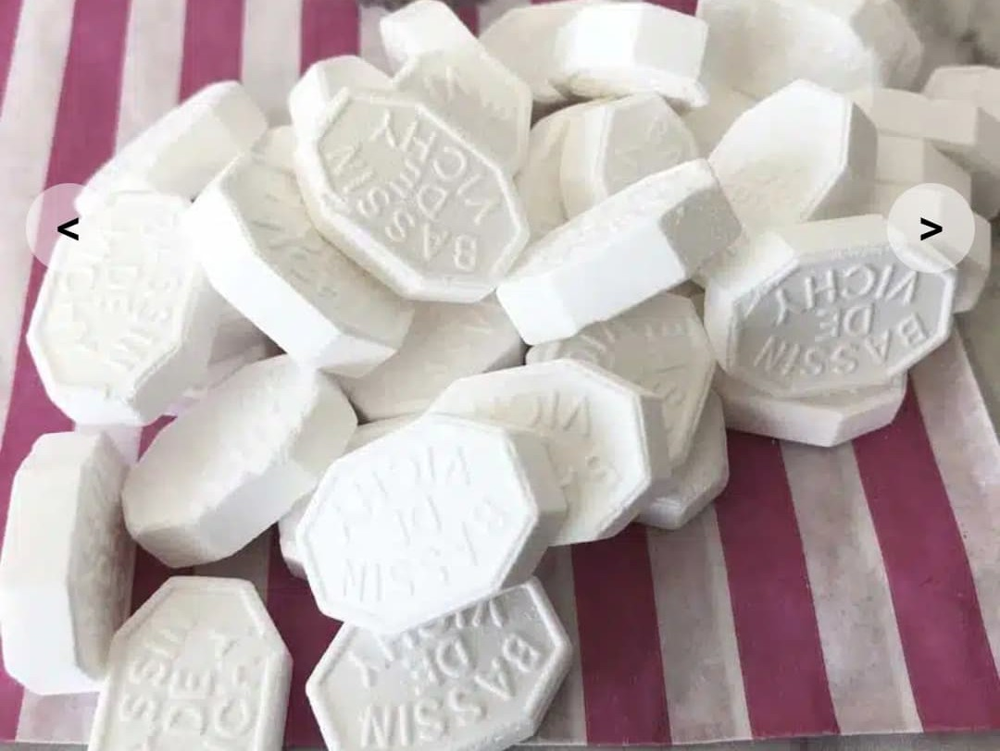
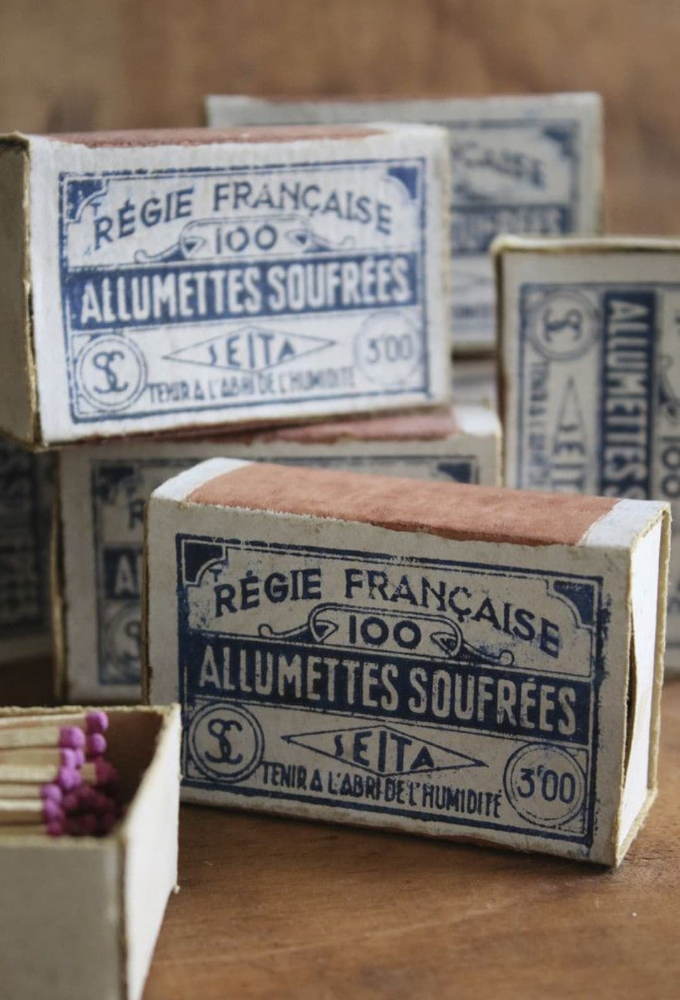
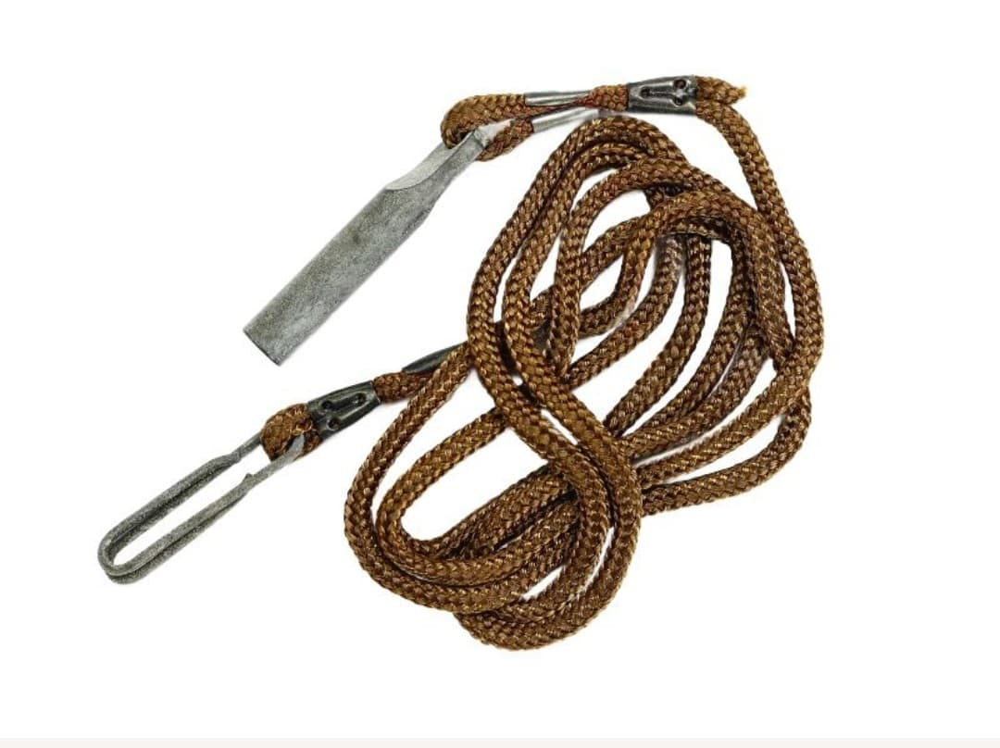

Introduction
Cette partie regroupe les objets utilisés par le soldat français pour améliorer son confort en campagne, organiser son bivouac et entretenir son arme. Ces accessoires, souvent civils, complètent l’équipement réglementaire et témoignent du quotidien des combattants de 1939–1940.
Huilier
Contient l’huile pour l’entretien du fusil, toujours présent dans le paquetage.

Burette d’huile
Utilisée pour lubrifier les pièces mobiles de l’arme.

Chiffon
Chiffon civil utilisé pour nettoyer l’arme et les pièces métalliques.

Brosse
Petite brosse pour le canon et les pièces internes du fusil.

Lampe de poche
Lampe civile en métal ou bakélite, utilisée pour le bivouac, les déplacements nocturnes et l’entretien de l’arme. Très répandue dans les unités françaises en 1939–1940.

Boîte de biscuits
Objet de confort apporté de la maison ou reçu dans les colis.

Bonbons / Pastilles
Petites sucreries très appréciées en campagne.

Miroir de poche
Utilisé pour la toilette ou vérifier une blessure.

Allumettes
Boîte d’allumettes d’époque pour allumer feu ou bougies.

Cordelette
Utilisée pour fixer du matériel ou improviser un abri.

Boîte métallique
Permet de protéger des objets ou de transporter de petites rations.